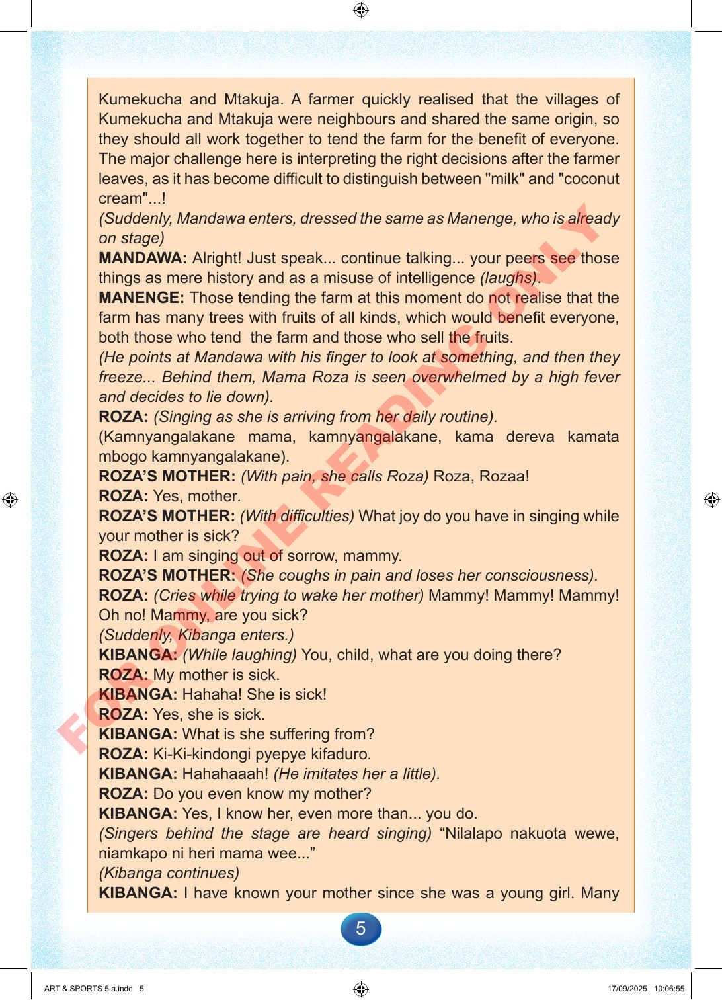

5
Kumekucha
and
Mtakuja.
A
farmer
quickly
realised
that
the
villages
of
Kumekucha
and
Mtakuja
were
neighbours
and
shared
the
same
origin,
so
they
should
all
work
together
to
tend
the
farm
for
the
benefit
of
everyone.
The
major
challenge
here
is
interpreting
the
right
decisions
after
the
farmer
leaves,
as
it
has
become
difficult
to
distinguish
between
"milk"
and
"coconut
cream"...!
(Suddenly,
Mandawa
enters,
dressed
the
same
as
Manenge,
who
is
already
on
stage)
MANDAWA:
Alright!
Just
speak...
continue
talking...
your
peers
see
those
things
as
mere
history
and
as
a
misuse
of
intelligence
(laughs).
MANENGE:
Those
tending
the
farm
at
this
moment
do
not
realise
that
the
farm
has
many
trees
with
fruits
of
all
kinds,
which
would
benefit
everyone,
both
those
who
tend
the
farm
and
those
who
sell
the
fruits.
(He
points
at
Mandawa
with
his
finger
to
look
at
something,
and
then
they
freeze...
Behind
them,
Mama
Roza
is
seen
overwhelmed
by
a
high
fever
and
decides
to
lie
down).
ROZA:
(Singing
as
she
is
arriving
from
her
daily
routine).
(Kamnyangalakane
mama,
kamnyangalakane,
kama
dereva
kamata
mbogo
kamnyangalakane).
ROZA’S
MOTHER:
(With
pain,
she
calls
Roza)
Roza,
Rozaa!
ROZA:
Yes,
mother.
ROZA’S
MOTHER:
(With
difficulties)
What
joy
do
you
have
in
singing
while
your
mother
is
sick?
ROZA:
I
am
singing
out
of
sorrow,
mammy.
ROZA’S
MOTHER:
(She
coughs
in
pain
and
loses
her
consciousness).
ROZA:
(Cries
while
trying
to
wake
her
mother)
Mammy!
Mammy!
Mammy!
Oh
no!
Mammy,
are
you
sick?
(Suddenly,
Kibanga
enters.)
KIBANGA:
(While
laughing)
You,
child,
what
are
you
doing
there?
ROZA:
My
mother
is
sick.
KIBANGA:
Hahaha!
She
is
sick!
ROZA:
Yes,
she
is
sick.
KIBANGA:
What
is
she
suffering
from?
ROZA:
Ki-Ki-kindongi
pyepye
kifaduro.
KIBANGA:
Hahahaaah!
(He
imitates
her
a
little).
ROZA:
Do
you
even
know
my
mother?
KIBANGA:
Yes,
I
know
her,
even
more
than...
you
do.
(Singers
behind
the
stage
are
heard
singing)
“Nilalapo
nakuota
wewe,
niamkapo
ni
heri
mama
wee...”
(Kibanga
continues)
KIBANGA:
I
have
known
your
mother
since
she
was
a
young
girl.
Many
ART
&
SPORTS
5
a.indd
5
ART
&
SPORTS
5
a.indd
5
17/09/2025
10:06:55
17/09/2025
10:06:55
F
O
R
O
N
L
I
N
E
R
E
A
D
I
N
G
O
N
L
Y